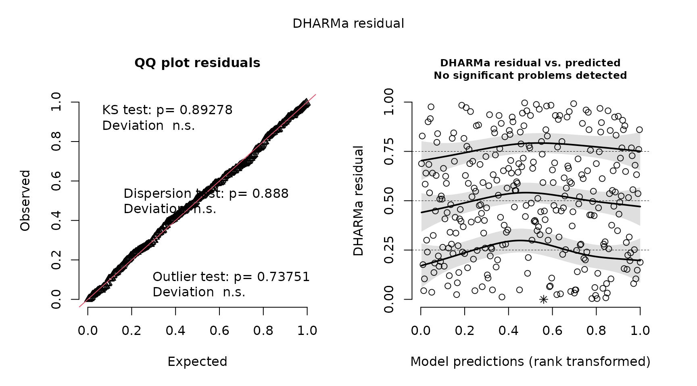
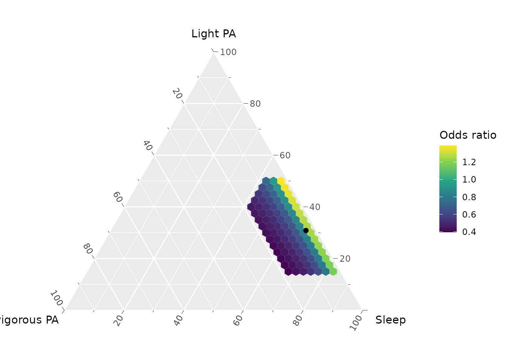
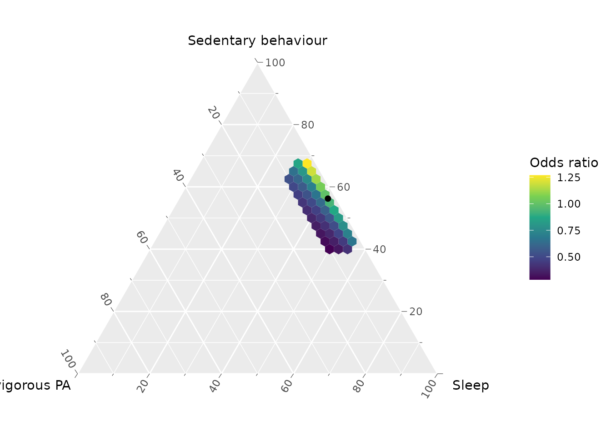
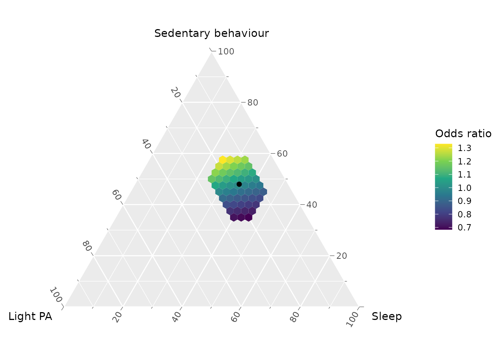
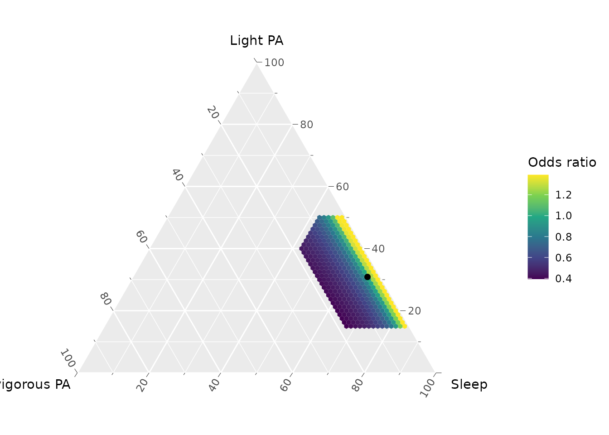
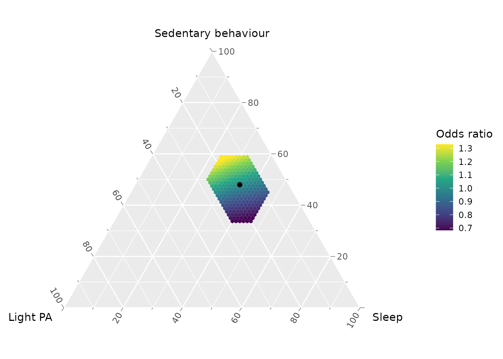

Modelling an outcome from a composition
Source:vignettes/composition-predictor.Rmd
composition-predictor.RmdOnce a time-use composition is declared, comp_iv()
models a health outcome as a function of that composition, handling the
pivot isometric log-ratio (ILR) transformation, model fitting, and basis
rotations in one call. It supports eleven model engines across
continuous, binary, count, survival, ordinal, and multinomial
outcomes:
| Outcome type | Single-level model | Multilevel counterpart | Purpose and effect reported |
|---|---|---|---|
| Continuous | "lm" |
"lmer" |
mean difference in the outcome |
| Continuous, outlier-robust | "lmrob" |
"rlmer" |
mean difference, down-weighting outlying observations |
| Binary, count or rate (a GLM family) | "glm" |
"glmer" |
odds ratio (logit link); rate, risk or mean ratio (log link) |
| Time to event | "cox" |
"coxme" |
hazard ratio; relative reallocations only |
| Ordinal | "clm" |
"clmm" |
cumulative odds ratio; relative only |
| Unordered categories | "mblogit" |
"mblogit" with random
|
one relative-risk ratio per category; relative only |
Here we focus on the two single-level engines "lm" and
"glm" using the bundled timeuse data
(zbmi, obesity, and sex); for the
remaining engines and the ilr() formula interface, see
vignette("advanced-models", package = "timecoda").
cd <- declare_composition(
data = timeuse,
parts = c("MVPA", "LPA", "SB", "SPT"),
closure = 1440,
labels = c(
MVPA = "Moderate-to-vigorous PA",
LPA = "Light PA",
SB = "Sedentary behaviour",
SPT = "Sleep"
)
)Fitting a model
To model a continuous outcome like zbmi, pass the
declared composition, the outcome name, and model = "lm" to
comp_iv():
fit_bmi <- comp_iv(comp = cd, outcome = "zbmi", model = "lm")
summary(object = fit_bmi)
#> <comp_iv> compositional linear model
#> Parts: Moderate-to-vigorous PA, Light PA, Sedentary behaviour, Sleep (total = 1440)
#> Omnibus composition test (Wald): chi-squared(3) = 291.105, p = <2e-16
#>
#> Compositional effects (Mean difference)
#> # A tibble: 5 × 6
#> parameter label estimate conf.low conf.high p.value
#> <chr> <chr> <dbl> <dbl> <dbl> <dbl>
#> 1 Global Composition Global Composition NA NA NA 8.37e-63
#> 2 MVPA vs remaining Moderate-to-vigorous … -0.708 -0.807 -0.609 6.94e-35
#> 3 LPA vs remaining Light PA -0.202 -0.456 0.0525 1.19e- 1
#> 4 SB vs remaining Sedentary behaviour 1.72 1.37 2.07 9.58e-20
#> 5 SPT vs remaining Sleep -0.810 -1.16 -0.462 6.68e- 6Two things happen behind the scenes here. First,
comp_iv() transforms the four parts into D - 1 = 3 pivot ILR coordinates and fits the
linear model, running a joint Wald test across all three coordinates.
That omnibus test is invariant to part order and tests whether the
composition as a whole is associated with zbmi. (For linear
models, the Wald statistic equals (D -
1) times the F statistic, so in
small samples its p-value is slightly smaller than that of an exact
F test.)
Second, because only the first pivot coordinate isolates a single
behaviour against the geometric mean of the rest (Dumuid et al., 2018;
Dumuid et al., 2020), comp_iv() refits the same model D times—rotating each part into the first
position—and pulls out that first slope for each row of the summary
table. Each refit is just a rotation of the same model and produces
identical fitted values.
![Flowchart of the comp_iv() pipeline: a compD object and an outcome column enter; the composition is transformed to D minus 1 pivot ILR coordinates; the outcome is fitted on those coordinates and any covariates with the model engine named by model, with a family supplied for glm and glmer only; an omnibus Wald test on all coordinates together and one rotated refit per part, giving its part-versus-remaining effect and read by summary() only, follow side by side; the result is a comp_iv object read by summary(), fit_check() and the reallocation functions.](comp-iv-pipeline.svg)
In the table above, a one-unit increase in the pivot coordinate for
MVPA is associated with a 0.708-unit lower mean
zbmi. Keep in mind that a one-unit shift in a pivot
coordinate is large: for a four-part composition, it multiplies the
ratio of that part to the geometric mean of the other three by \exp(\sqrt{4/3}) \approx 3.17. That is why
these slopes are best read for direction and relative strength, while
minute-based effect sizes come from predict_realloc() (see
vignette("predicting-reallocations", package = "timecoda")).
Note also that per-part p-values are unadjusted for multiple
comparisons.
Binary outcomes and covariates
For a binary outcome like obesity, switch to
model = "glm" with family = "binomial", and
pass adjustment variables to covariates:
fit_ob <- comp_iv(
comp = cd,
outcome = "obesity",
model = "glm",
family = "binomial",
covariates = "sex"
)
summary(object = fit_ob)
#> <comp_iv> compositional generalized linear model (binomial)
#> Parts: Moderate-to-vigorous PA, Light PA, Sedentary behaviour, Sleep (total = 1440)
#> Omnibus composition test (Wald): chi-squared(3) = 28.845, p = 2.41e-06
#> Convergence: OK
#>
#> Compositional effects (Odds ratio)
#> # A tibble: 5 × 6
#> parameter label estimate conf.low conf.high p.value
#> <chr> <chr> <dbl> <dbl> <dbl> <dbl>
#> 1 Global Composition Global Composition NA NA NA 2.41e-6
#> 2 MVPA vs remaining Moderate-to-vigorous PA 0.501 0.382 0.656 5.07e-7
#> 3 LPA vs remaining Light PA 0.981 0.504 1.91 9.54e-1
#> 4 SB vs remaining Sedentary behaviour 2.98 1.16 7.65 2.34e-2
#> 5 SPT vs remaining Sleep 0.684 0.273 1.71 4.16e-1Because this is a logistic model, the pivot coefficients are
automatically exponentiated to odds ratios (similarly,
"log" links report rate, risk, or mean ratios, and
"identity" links report mean differences). You can pass
family either as a string ("binomial") or a
family object (binomial(link = "logit")). Here, spending
more time in MVPA relative to the rest of the day is
associated with lower odds of obesity (OR = 0.501, 95% CI [0.382,
0.656]), adjusted for sex. The Convergence: OK line
confirms the backend fitted without warnings; if any warnings occur,
they appear there.
Variables passed to covariates enter as main effects.
Comparing fit_ob with an unadjusted fit shows that sex
barely shifts the compositional estimates in these data:
fit_ob_unadj <- comp_iv(comp = cd, outcome = "obesity", model = "glm",
family = "binomial")
summary(object = fit_ob_unadj)
#> <comp_iv> compositional generalized linear model (binomial)
#> Parts: Moderate-to-vigorous PA, Light PA, Sedentary behaviour, Sleep (total = 1440)
#> Omnibus composition test (Wald): chi-squared(3) = 28.922, p = 2.33e-06
#> Convergence: OK
#>
#> Compositional effects (Odds ratio)
#> # A tibble: 5 × 6
#> parameter label estimate conf.low conf.high p.value
#> <chr> <chr> <dbl> <dbl> <dbl> <dbl>
#> 1 Global Composition Global Composition NA NA NA 2.33e-6
#> 2 MVPA vs remaining Moderate-to-vigorous PA 0.501 0.382 0.656 4.89e-7
#> 3 LPA vs remaining Light PA 0.982 0.506 1.91 9.58e-1
#> 4 SB vs remaining Sedentary behaviour 2.98 1.16 7.65 2.34e-2
#> 5 SPT vs remaining Sleep 0.683 0.273 1.71 4.15e-1If you need composition-by-covariate interactions, see the moderation
section in
vignette("advanced-models", package = "timecoda"). For
compositions whose row totals vary across participants (such as waking
wear time), you can also include the total itself via
include_total = TRUE.
Two minor options are worth keeping in mind: you can change
confidence interval coverage without refitting via
summary(object = fit_ob, conf_level = 0.90), and you can
forward extra backend arguments (like observation weights or optimizer
controls) through model_args (see
?comp_iv).
summary(object = fit_ob, conf_level = 0.90)
#> <comp_iv> compositional generalized linear model (binomial)
#> Parts: Moderate-to-vigorous PA, Light PA, Sedentary behaviour, Sleep (total = 1440)
#> Omnibus composition test (Wald): chi-squared(3) = 28.845, p = 2.41e-06
#> Convergence: OK
#>
#> Compositional effects (Odds ratio)
#> # A tibble: 5 × 6
#> parameter label estimate conf.low conf.high p.value
#> <chr> <chr> <dbl> <dbl> <dbl> <dbl>
#> 1 Global Composition Global Composition NA NA NA 2.41e-6
#> 2 MVPA vs remaining Moderate-to-vigorous PA 0.501 0.399 0.628 5.07e-7
#> 3 LPA vs remaining Light PA 0.981 0.561 1.71 9.54e-1
#> 4 SB vs remaining Sedentary behaviour 2.98 1.35 6.57 2.34e-2
#> 5 SPT vs remaining Sleep 0.684 0.317 1.48 4.16e-1Checking the fit
Before plotting or reporting predictions, we check model assumptions
with fit_check(). For "lm",
"glm", "lmer", and "glmer" fits,
it computes simulated quantile residuals via DHARMa (Dunn
& Smyth, 1996; Hartig, 2026) under a fixed internal seed (override
with seed if needed):
fit_check(object = fit_ob)#> <fit_check> generalized linear model
#> Backend: dharma
#> Convergence: converged (0 backend warnings)
#>
#> # A tibble: 3 × 4
#> check statistic df p.value
#> <chr> <dbl> <dbl> <dbl>
#> 1 KS uniformity 0.0354 NA 0.847
#> 2 Dispersion 1.01 NA 0.992
#> 3 Outliers 0 NA 1None of the three checks suggests misspecification for
fit_ob.
Running the same diagnostic on fit_bmi flags a single
observation outside the simulated range (marked by a star in the right
panel), which is consistent with random variation (p = 0.738). At the console,
DHARMa may also emit an mgcv warning when
estimating the visual quantile curves; this affects only the plotted
curves and not the three test statistics.
fit_check(object = fit_bmi)
#> <fit_check> linear model
#> Backend: dharma
#>
#> # A tibble: 3 × 4
#> check statistic df p.value
#> <chr> <dbl> <dbl> <dbl>
#> 1 KS uniformity 0.0333 NA 0.893
#> 2 Dispersion 0.987 NA 0.888
#> 3 Outliers 1 NA 0.738Visualizing the fitted surface
To see how predicted obesity risk varies across the simplex, we plot
the fitted surface. For a four-part composition, plot()
draws one ternary panel per three-part subcomposition—holding the fourth
part at the sample’s closed geometric mean (marked by the black
point)—with each grid cell shown as an uninterpolated hexagonal tile
coloured by its odds ratio relative to that reference day:
p_ob <- plot(x = fit_ob)



To avoid extrapolating into empty corners of the simplex, predictions
are masked by default to the region where each part falls between its
5th and 95th observed percentiles (pass quantiles = NULL to
colour the entire triangle). In the three panels containing
MVPA, predicted odds ratios drop as low as 0.27 toward the
high-MVPA edge of the observed band.
For a continuous colour gradient instead of discrete hexagonal tiles,
pass smooth = TRUE, which fits a quadratic surface on the
link scale over a finer lattice using the same underlying grid
values:
plot(x = fit_ob, smooth = TRUE)



Publication tables
To turn the full-precision summary() output into a
formatted gt table for a manuscript, pass it to
pub_ready():
| Compositional effects | |||
| Each part versus the remaining composition | |||
| Analysis Component | Odds ratio | 95% CI | p-value |
|---|---|---|---|
| Global Composition | - | - | <0.001 |
| Moderate-to-vigorous PA vs remaining | 0.50 | [0.38, 0.66] | <0.001 |
| Light PA vs remaining | 0.98 | [0.50, 1.91] | 0.9540 |
| Sedentary behaviour vs remaining | 2.98 | [1.16, 7.65] | 0.0234 |
| Sleep vs remaining | 0.68 | [0.27, 1.71] | 0.4159 |
Estimates and confidence bounds default to two decimal places
(digits = 2), with p-values below 0.001 displayed as
<0.001. Printing
pub_ready(x = summary(object = fit_ob)) without
$effects displays all tables built for that summary.
References
Dumuid, D., Stanford, T. E., Martín-Fernández, J. A., Pedišić, Ž., Maher, C. A., Lewis, L. K., Hron, K., Katzmarzyk, P. T., Chaput, J. P., Fogelholm, M., Hu, G., Lambert, E. V., Maia, J., Sarmiento, O. L., Standage, M., Barreira, T. V., Broyles, S. T., Tudor-Locke, C., Tremblay, M. S., & Olds, T. (2018). Compositional data analysis for physical activity, sedentary time and sleep research. Statistical Methods in Medical Research, 27, 3726-3738.
Dumuid, D., Pedišić, Ž., Palarea-Albaladejo, J., Martín-Fernández, J. A., Hron, K., & Olds, T. (2020). Compositional data analysis in time-use epidemiology: What, why, how. International Journal of Environmental Research and Public Health, 17, 2220.
Dunn, P. K., & Smyth, G. K. (1996). Randomized quantile residuals. Journal of Computational and Graphical Statistics, 5, 236-244.
Hartig, F. (2026). DHARMa: Residual diagnostics for hierarchical (multi-level / mixed) regression models. R package version 0.5.0.
See also
-
vignette("composition-variable", package = "timecoda"): declaring and describing the composition thatcomp_iv()takes as input. -
vignette("predicting-reallocations", package = "timecoda"): estimating the change in the outcome when time moves between two parts, from acomp_iv()fit. -
vignette("advanced-models", package = "timecoda"): the other model engines, the formula interface, moderation, and the total as a covariate. -
vignette("timecoda", package = "timecoda"): the whole workflow in one analysis.